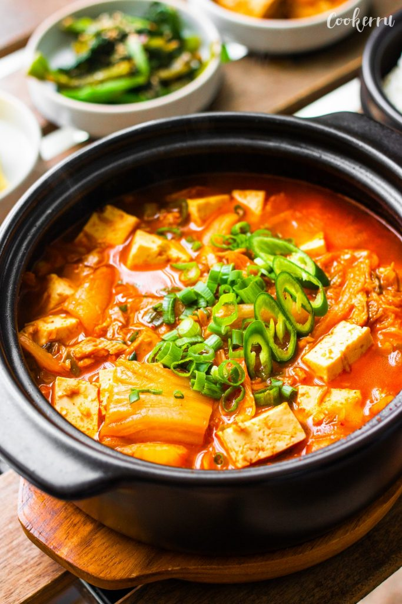

Celeste's famous Kimchi Stew (Kimchi-jjiggae)
Back to recipes

What is kimchi jjigae?
Kimchi-jjigae or kimchi stew is a jjigae, or stew-like Korean dish, made with kimchi and other ingredients,
such as pork or seafood, scallions, onions, and diced Dubu. It is one of the most common stews in Korean cuisine.
Ingredients
- 1 pound kimchi, cut into bite size pieces
- ¼ cup kimchi brine
- ½ pound pork shoulder (or pork belly)
- ½ package of tofu (optional), sliced into ½ inch thick bite size pieces
- 3 green onions
- 1 medium onion, sliced (1 cup)
- 1 teaspoon kosher salt
- 2 teaspoons sugar
- 2 teaspoons gochugaru (Korean hot pepper flakes)
- 1 tablespoon gochujang (hot pepper paste)
- 1 teaspoon toasted sesame oil
- 2 cups of anchovy stock (or chicken or beef broth)
Steps
Make anchovy stock:
- Put the anchovies, daikon, green onion roots, and dried kelp in a sauce pan.
- Add the water and boil for 20 minutes over medium high heat.
- Lower the heat to low for another 5 minutes.
- Strain.
Make kimchi stew:
- Place the kimchi and kimchi brine in a shallow pot. Add pork and onion
- Slice 2 green onions diagonally and add them to the pot.
- Add salt, sugar, hot pepper flakes, and hot pepper paste. Drizzle sesame oil over top and add the anchovy stock
- Cover and cook for 10 minutes over medium high heat.
- Open and mix in the seasonings with a spoon. Lay the tofu over top.
- Cover and cook another 10 to 15 minutes over medium heat.
- Chop 1 green onion and put it on the top of the stew. Remove from the heat and serve right away with rice.